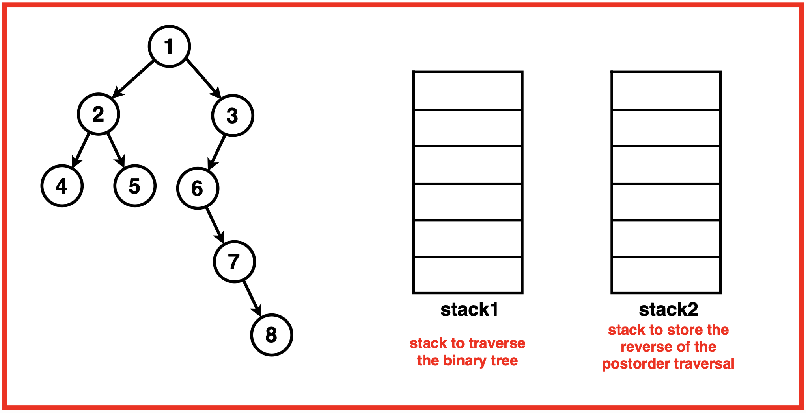
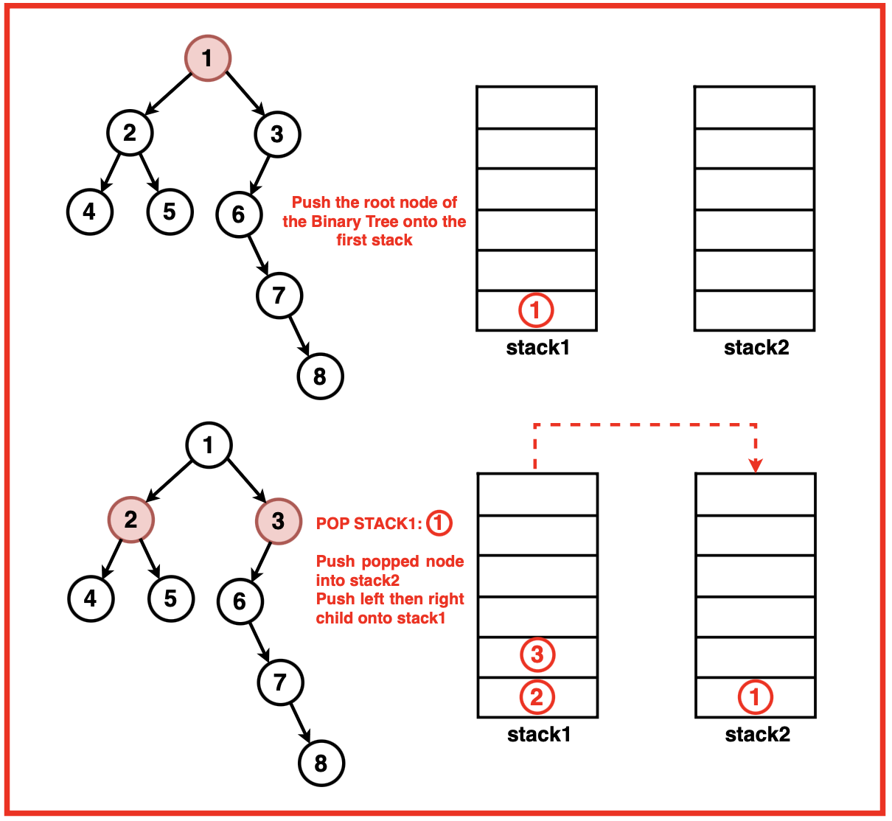
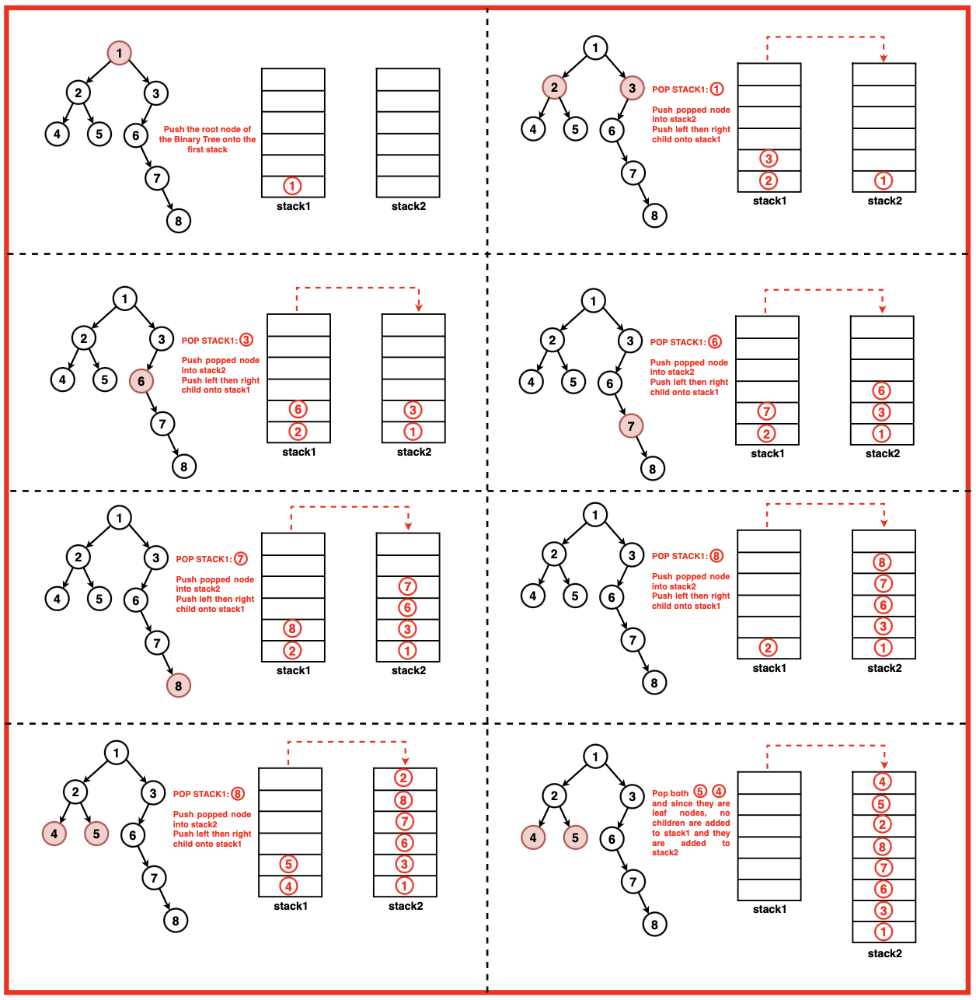
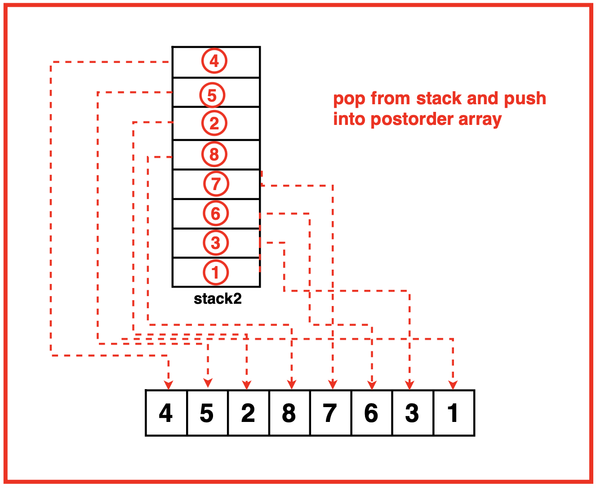

Iterative Postorder Traversal of Binary Tree Using 2 Stacks
Problem Statement: Given the root of a Binary Tree, create a function that performs a postorder traversal using two stacks and returns an array containing the traversal sequence.
Examples
Example 1:Input: Binary Tree: 4 2 5 3 -1 7 6 -1 9 -1 -1 8 -1 1Output: [1, 9, 3, 2, 7, 8, 6, 5, 4] Explanation: We traverse the binary tree in the order of Left, Right then Root recursively resulting in the following traversal:Example 2:Input:Binary Tree: 1 2 3 4 5 6 7 -1 -1 8 -1 -1 -1 9 10
Output : [1 2 4 5 8 3 6 7 9 10]Explanation: We traverse the binary tree in the order of Left, Right then Root recursively resulting in the following traversal:
Disclaimer: Don’t jump directly to the solution, try it out
yourself first.
Optimal Approach
Algorithm / Intuition
This approach performs a modified postorder traversal (left, right then root) and then reverses the result to obtain the postorder traversal sequence. This approach uses two stacks, one for traversal and another to store the nodes in a manner that facilitates obtaining the postorder sequence in reverse.The root node is pushed onto the first stack to initiate traversal and nodes are iteratively processed by popping them from the first stack, pushing them onto the second and adding their left and right children onto the first stack. This process continues until all nodes have been processed.Lastly, all nodes from the second stack are popped and retrieved in reverse order, effectively getting the postorder traversal sequence which is stored in an array and returned.
Algorithm:
Step 1: Create two stacks: one for holding nodes and another for storing the final postorder traversal sequence. Initialise an array `postorder` to store the traversal sequence.

Step 2: Push the root node to the first stack.

Step 3: Process the nodes until the first stack is empty:
Pop a node from the top of the first stack.
Push this node onto the second stack.
Push its left child (if it exists) onto the first stack.
Push its right child (if it exists) onto the first stack.

Step 4:Once the first stack is empty, retrieve the nodes in the postorder sequence by popping nodes from the second stack one by one and store them in the postorder array.

Code
#include <iostream>
#include <vector>
#include <stack>
using namespace std;
// Node structure for the binary tree
struct Node {
int data;
Node* left;
Node* right;
// Constructor to initialize
// the node with a value
Node(int val) : data(val), left(nullptr), right(nullptr) {}
};
// Function to return the postOrder
// traversal of a binary tree using
// two stacks
vector<int> postOrder(Node* root) {
// Vector to store
// postorder traversal
vector<int> postorder;
// If the tree is empty,
// return an empty traversal
if(root == NULL){
return postorder;
}
// Two stacks for
// iterative traversal
stack<Node*> st1, st2;
// Push the root node
// onto the first stack
st1.push(root);
// Iterative traversal to populate
// st2 with nodes in postorder
while(!st1.empty()){
// Get the top node from st1
root = st1.top();
st1.pop();
// Push the node onto st2
st2.push(root);
// Push left child onto st1 if exists
if(root->left != NULL){
st1.push(root->left);
}
// Push right child onto st1 if exists
if(root->right != NULL){
st1.push(root->right);
}
}
// Populate the postorder traversal
// vector by popping st2
while(!st2.empty()){
postorder.push_back(st2.top()->data);
st2.pop();
}
// Return the
// postorder traversal
return postorder;
}
// Function to print the
// elements of a vector
void printVector(const vector<int>& vec) {
// Iterate through the vector
// and print each element
for (int num : vec) {
cout << num << " ";
}
cout << endl;
}
// Main function
int main()
{
// Creating a sample binary tree
Node* root = new Node(1);
root->left = new Node(2);
root->right = new Node(3);
root->left->left = new Node(4);
root->left->right = new Node(5);
// Getting postorder traversal
vector<int> result = postOrder(root);
// Printing the postorder
// traversal result
cout << "Postorder traversal: ";
printVector(result);
return 0;
}
import java.util.*;
// Node class for the binary tree
class Node {
int data;
Node left;
Node right;
// Constructor to initialize
// the node with a value
Node(int val) {
data = val;
left = null;
right = null;
}
}
public class BinaryTreePostorder {
// Function to return the postOrder
// traversal of a binary tree using
// two stacks
public static List<Integer> postOrder(Node root) {
// List to store postorder traversal
List<Integer> postorder = new ArrayList<>();
// If the tree is empty, return an empty traversal
if (root == null) {
return postorder;
}
// Two stacks for iterative traversal
Stack<Node> st1 = new Stack<>();
Stack<Node> st2 = new Stack<>();
// Push the root node onto the first stack
st1.push(root);
// Iterative traversal to populate st2 with nodes in postorder
while (!st1.empty()) {
// Get the top node from st1
root = st1.pop();
// Push the node onto st2
st2.push(root);
// Push left child onto st1 if exists
if (root.left != null) {
st1.push(root.left);
}
// Push right child onto st1 if exists
if (root.right != null) {
st1.push(root.right);
}
}
// Populate the postorder traversal list by popping st2
while (!st2.empty()) {
postorder.add(st2.pop().data);
}
// Return the postorder traversal
return postorder;
}
// Function to print the
// elements of a list
public static void printList(List<Integer> list) {
// Iterate through the list
// and print each element
for (int num : list) {
System.out.print(num + " ");
}
System.out.println();
}
// Main method
public static void main(String[] args) {
// Creating a sample binary tree
Node root = new Node(1);
root.left = new Node(2);
root.right = new Node(3);
root.left.left = new Node(4);
root.left.right = new Node(5);
// Getting postorder traversal
List<Integer> result = postOrder(root);
// Printing the postorder traversal result
System.out.print("Postorder traversal: ");
printList(result);
}
}
# Node class for the binary tree
class Node:
def __init__(self, val):
self.data = val
self.left = None
self.right = None
# Function to return the postOrder
# traversal of a binary tree using
# two stacks
def postOrder(root):
# Vector to store
# postorder traversal
postorder = []
# If the tree is empty,
# return an empty traversal
if root is None:
return postorder
# Two stacks for
# iterative traversal
st1, st2 = [], []
# Push the root node
# onto the first stack
st1.append(root)
# Iterative traversal to populate
# st2 with nodes in postorder
while st1:
# Get the top node from st1
root = st1.pop()
# Push the node onto st2
st2.append(root)
# Push left child onto st1 if exists
if root.left is not None:
st1.append(root.left)
# Push right child onto st1 if exists
if root.right is not None:
st1.append(root.right)
# Populate the postorder traversal
# list by popping st2
while st2:
postorder.append(st2[-1].data)
st2.pop()
# Return the
# postorder traversal
return postorder
# Function to print the
# elements of a list
def printList(lst):
# Iterate through the list
# and print each element
for num in lst:
print(num, end=" ")
print()
# Main function
if __name__ == "__main__":
# Creating a sample binary tree
root = Node(1)
root.left = Node(2)
root.right = Node(3)
root.left.left = Node(4)
root.left.right = Node(5)
# Getting postorder traversal
result = postOrder(root)
# Printing the postorder
# traversal result
print("Postorder traversal: ", end="")
printList(result)
// Node class for the binary tree
class Node {
constructor(val) {
this.data = val;
this.left = null;
this.right = null;
}
}
// Function to perform postorder
// traversal using two stacks
function postOrder(root) {
// Vector to store
// postorder traversal
const postorder = [];
// If the tree is empty,
// return an empty traversal
if (!root) {
return postorder;
}
// Two stacks for
// iterative traversal
const st1 = [];
const st2 = [];
// Push the root node
// onto the first stack
st1.push(root);
// Iterative traversal to populate
// st2 with nodes in postorder
while (st1.length > 0) {
// Get the top node from st1
root = st1.pop();
// Push the node onto st2
st2.push(root);
// Push left child onto st1 if exists
if (root.left !== null) {
st1.push(root.left);
}
// Push right child onto st1 if exists
if (root.right !== null) {
st1.push(root.right);
}
}
// Populate the postorder
// traversal vector by popping st2
while (st2.length > 0) {
postorder.push(st2[st2.length - 1].data);
st2.pop();
}
// Return the postorder traversal
return postorder;
}
// Function to print
// the elements of an array
function printArray(arr) {
// Iterate through the
// array and print each element
for (const num of arr) {
console.log(num + " ");
}
console.log("\n");
}
// Creating a sample binary tree
let root = new Node(1);
root.left = new Node(2);
root.right = new Node(3);
root.left.left = new Node(4);
root.left.right = new Node(5);
// Getting postorder traversal
let result = postOrder(root);
// Printing the postorder traversal result
console.log("Postorder traversal: ");
printArray(result);
Output
Postorder traversal: 4 5 2 3 1
Complexity Analysis
Time Complexity: O(2N) where N is the number of nodes in the Binary Tree. The traversal process visits each node in the Binary Tree exactly once to push into stack1 and stack2. Then after the tree is traversed and the nodes are popped from stack2 to push into the postorder array.
Space Complexity: O(2N) where N is the number of nodes in the Binary Tree. The space occupied by the two stacks depend on the height of the binary tree. In the worst-case scenario, if the tree is skewed, the space complexity would be O(N) as both stacks could potentially hold all nodes at different points during traversal.The postorder array also holds all nodes from the binary tree hence giving another O(N) + O(N) ~ O(2N).
Video Explanation
Special thanks to Gauri Tomar for contributing to this article on takeUforward. If you also wish to share your knowledge with the takeUforward fam, please check out this article